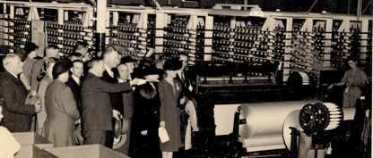

THE PEDALTO INSTITUTION FOR INCORPORATED ART
DELEGATION AND FACT FINDING MISSION ESTONIA CALL FOR PROPOSALS

Bureaucratia necessitas non est, amor est

Tallinn, Estonia
August 20-29 2010
The Pedalto Institution for Incorporated Art will undertake a fact-finding mission to Tallinn, Estonia in August, 2010. The mission will be primarily be based out of the Culture Factory Polymer to coincide with that organization's' annual festival beginning August 20 and ending August 29. The Institution is currently seeking applications from interested parties.
PARTICIPANTS
1. Emissaries
Emissaries will travel to Tallinn as representatives of The Pedalto Institution for Incorporated Art. Shared board will be provided in exchange for the following duties:
•Representation and promotion of The Institution's interests
•Meetings with business leaders and government officials
•Organization and execution of presentations and symposia
•Accumulation, analysis and presentation of data
•Attendance at cultural functions
•Travel within Estonia
Along with communal housing, Culture Factory Polymer can offer communal workspace and exhibition
space for emissaries. Polymer can arrange opportunities for emissary talks at the Estonian Academy of
Arts or other partner institutions, opportunities to lead workshops, deliver papers or give lectures,
representation in Polymer's printed and online promotional material, free admission to all Polymer
festival events, free access to our woodblock letter press, free wifi and a press conference.
Emissaries will be expected to cover all personal travel costs with the exception of housing. Most functions will require formal attire.
2. Interests
Additionally, Pedalto seeks interests to represent while in Estonia. Interests are organizations or individuals interested in promoting themselves to some part of Estonian society. Interests may promote themselves and their ideas in three ways:
A. Exhibition
Pedalto will hold an exhibition for the promotion of its represented Interests. This exhibition will last from approximately August 15- September 1st at the Culture Factory Polymer. There may be opportunities for exhibitions in other locations. Exhibitors are responsible for transport of their work. Exhibitors may send easily transportable work with emissaries, however emissaries will not be held responsible for any damage or loss to the work during transit.
B. Virtual Presence Post
Pedalto will be establishing Virtual Presence Posts for Interests unable to make the trip but able to provide a presence via teleconferencing, interactive media, web hosting, and/or delegated live performance. These posts may be established at the Culture Factory Polymer or at other specified locations.
C. Diplomatic Mission
Interests may utilize Emissaries to carry out missions on their behalf. Upon selection for participation, Interests may present Emissaries with a set of instructions to complete. Missions may include, but are not limited to, all of the Emissarial duties listed above. Once given a mission, Emissaries will have plenipotentiary power to execute said mission.
FINAL REPORT
The fact-finding mission will culminate with a final report of all activities which will be sent to all participating members. The report will include documentation of the exhibition, performances, and missions, as well as any relevant information and analysis.
APPLICATION
If you are interested in participating as either an emissary or interest, please send a brief letter of interest including information about you or your organization, a resume of all participating individuals, and any supporting documentation to hqlatimer@pedalto.org
Applications will be reviewed by The Institution's directorate and notifications of acceptance will be sent via email within one month of receipt.
ABOUT CULTURE FACTORY POLYMER
During the Soviet era Polymer was a toy factory. In 1994, the company closed this branch of activities, leaving a large building in a state of abandonment. A few years later, a group of artists, intrigued by this big empty space, decided to turn it into their studio space. Step-by- step, other artists and musicians joined wishing to use these spaces for creating, for rehearsing…
Nowadays the factory disposes of 3000 sq m of space, dedicated to creation and dissemination. Retaining the original flair of the of the building, and keeping its authenticity, concrete production facilities have been transformed to incorporate new spaces for living, artist studios and an environment for alternative cultural events.
Polymer has evolved into a place for international artist residencies and the diffusion of ideas and energy. Within the walls of the building live together about 30 artists and organizations, working in diverse artistic fields. Constituted as a non profit organization, Polymer works as a platform and as a venue for different events and activities, offering a new space for alternative culture in Tallinn. Public events take place regularly, involving resident artists and guest artists, both Estonian and International.
Polymer is an organization involved in local life and open to the exterior. Polymer leads different cultural and social actions at a local level, and has developed partnerships in Tallinn, throughout Estonia and within Europe. Polymer is a member of Trans Europe Halles, a network founded in 1983 bringing together 40 independent culture centres in Europe.
Polymer International Artist in Residency program is developped in close cooperation with Art Container Gallery and Estonian Media Artists' Union, both organizations having their workspace in Polymer.
INFORMATIONAL RESOURCES
Culture Factory Polymer
C.I.A. World Fact Book: Estonia
https://www.cia.gov/library/publications/the-world-factbook/geos/en.html
Map of Tallinn
U.S. Embassy in Estonia
U.S. Department of State Office of eDiplomacy
http://www.state.gov/m/irm/ediplomacy/
American Chamber of Commerce Estonia
Estonian Government
http://www.valitsus.ee/?lang=en
Estonian Ministry of Foreign Affairs
Ministry of Economic Affairs and Communication
Ministry of Finance
Ministry of Culture
http://www.kul.ee/index.php?lang=en
Estonian Chamber of Commerce and Industry
Statistical Office of Estonia ( Estonian)
Enterprise Estonia
http://www.eas.ee/index.php?setlang=en-GB
Estonian Foreign Policy Institute
http://www.evi.ee/english/miss.html
Baltic Sea Chambers of Commerce
Estonian Export Directory
Estonian Institute
Estonian Cultural Events
Estonica: Encyclopedia on Estonia
Port of Tallinn
Estonian Railways
Association of Estonian Cities
Saaremaa Shipping Company
http://www.laevakompanii.ee/index.php?keel=2
International Affairs Web Resources
Cultural Contact Point